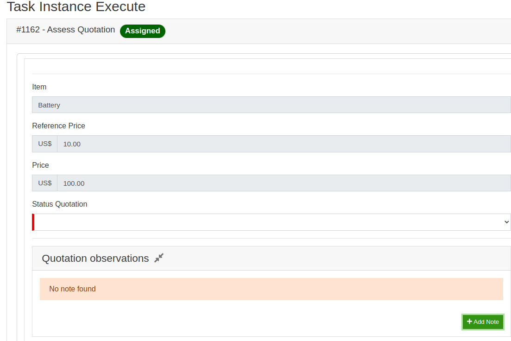

Notes
Notes are key elements in many processes. To make the management of notes easier, the platform provides a sophisticated mechanism to handle with notes.
Overview
<<<<<<< HEADFront-ent components
=======Let’s use the context that we have a task that a provider can insert a note to justify the price of your item being quoted, Soon after would have another task that an analyst would see the item of the provider and based on the annotation left, he could approve, disapprove or ask for an adjustment in the quotation.
Front-ent components
akip Notes is an existing class within the library, meaning we only need to call its component on the frontend code.
Below we can see how is the name of the component:
>>>>>>> e56b86bea8317faac8043e75ef875a6a5833547b<akip-notes> component
<akip-notes-task-instance> component
<<<<<<< HEAD
=======
Example Using Notes
The first thing we should do is identify the task we will use akip notes, after we will insert the code snippet below in the task code generated.
Component
<akip-notes-task-instance class="mt-3"
:taskInstance="taskContext.taskInstance"
:title="$t('label.notesQuotation')"
></akip-notes-task-instance>
After you put the snippet in your task should appear a field that will be possible to view and add new notes, as shown in the example below.

If you want to customize the akip notes title, you must create a field named label at the end of the global.json in the i18n folder.
"label": {
"notesQuotation": "Quotation observations",
}
Customizing the Component
You can pass props to the component for the purpose of customizing it. Below are some properties you can use:
TaskInstance: ITaskInstance
Default: false
readonly: boolean
noteTypes: String[]
Default: false
isPublic: boolean
Default: false
hideNotesInfos: boolean
Default: ‘label.notes’
title: string
otherEntities: INoteEntity[]
Default: default() {
return { showNotes: true };
}
collapseControllerProp: any